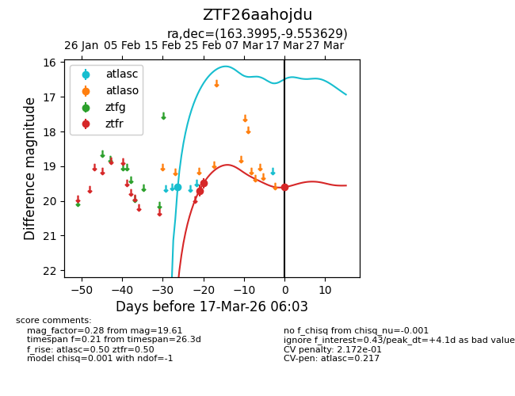
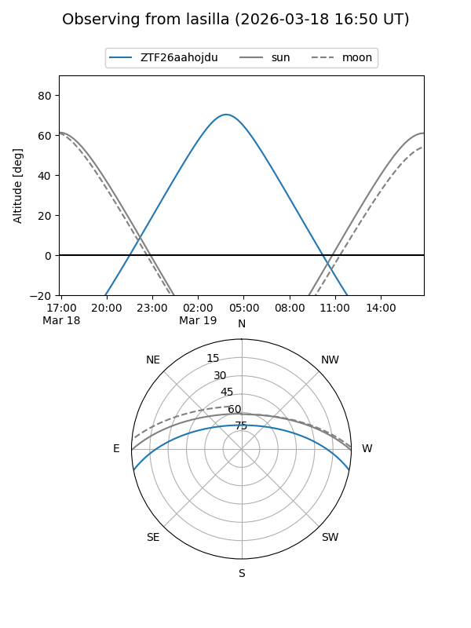
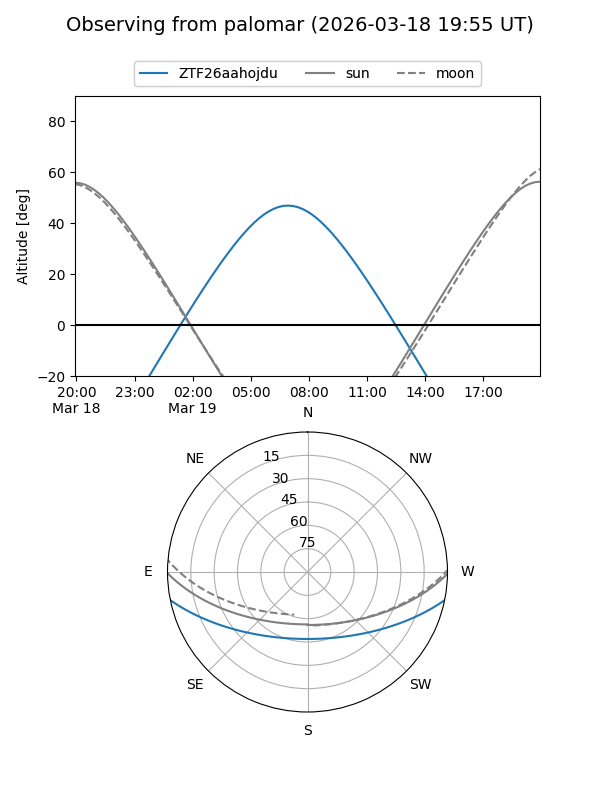
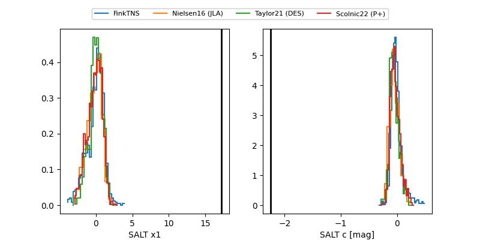

ZTF26aahojdu
Target ZTF26aahojdu at 2026-03-17 06:05
Aliases and brokers:
FINK: link
Lasair: link
ALeRCE: link
alt names
ZTF26aahojdu (ztf,fink_ztf)
Coordinates:
equatorial (ra, dec) = 163.3995,-9.55363
equatorial (HMS+DMS) = 10:53:35.88,-09:33:13.06
galactic (l, b) = (260.9631,+43.51028)
Flags:
likely cv
Photometry:
last atlasc=19.60, ztfr=19.61
1 atlasc, 3 ztfr detections
Lightcurve

Visibility


Additional plots
